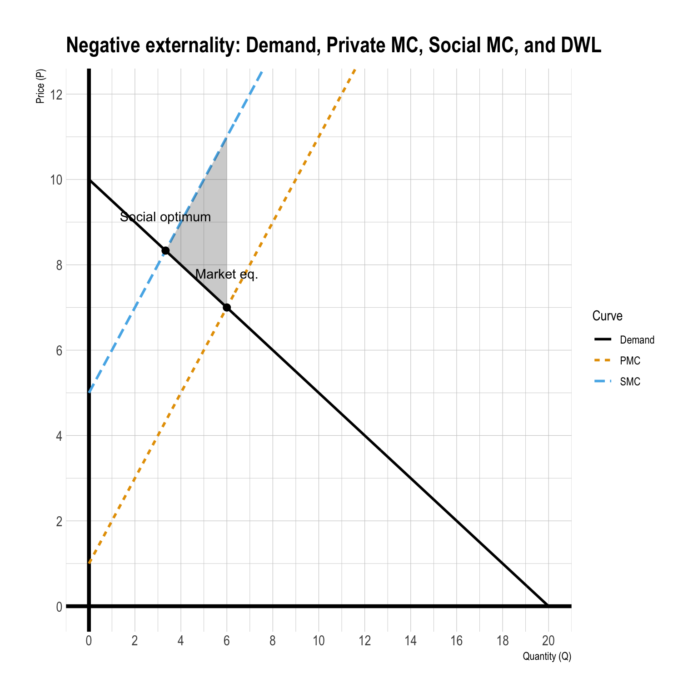

ECON 340 - Final Exam
SUNY Geneseo, Fall 2025
Section 1. Multiple Choice
Question 1
According to the Coase Theorem, if transaction costs are negligible, the final efficient outcome of a negotiation between a polluter and a victim is determined by:
- Which party has greater bargaining power.
- The initial assignment of property rights.
- The relative benefits and costs of the polluting activity.
- The amount of the Pigovian tax imposed.
Show answer
Answer: c
With negligible transaction costs, bargaining leads to the efficient outcome regardless of who holds the initial property right; efficiency is determined by whether the activity’s benefits exceed its harms (i.e., net gains).
Question 2
Farmer Alpha can drain a wetland to grow crops, earning $5,000 in additional profit. However, this would cause $8,000 in flood damage to downstream neighbor Beta. Suppose Beta holds the legal right to keep the wetland undrained (Alpha must obtain Beta’s consent to drain). Under the Coase theorem (no transaction costs), what is the efficient outcome and why?
- The wetland is drained because Alpha’s profit ($5,000) exceeds what he earns if he does not drain.
- The wetland is preserved because Alpha’s maximum willingness to pay for the right to drain ($5,000) is less than Beta’s minimum willingness to accept compensation to allow drainage ($8,000).
- The wetland is drained because Beta’s damages ($8,000) are greater than Alpha’s profit ($5,000).
- The wetland is preserved because Beta must pay Alpha at least $5,000 to prevent drainage.
Show answer
Answer: b
Efficiency requires comparing total benefits and damages. Draining yields +$5,000 but causes −$8,000, so net is −$3,000. Even if Alpha tries to buy permission, he won’t pay more than $5,000, while Beta won’t accept less than $8,000—so no trade occurs and the wetland stays undrained.
Question 3
Which empirical method is most commonly used by economists to estimate the Value of Statistical Life?
- Surveying individuals about their willingness to pay for healthcare.
- Aggregating the medical costs associated with treating fatal diseases.
- Calculating the lifetime earnings of an average worker.
- Wage-risk analysis comparing extra pay for riskier jobs.
Show answer
Answer: d
The standard approach is hedonic wage (or wage–risk) estimation: infer WTP for small mortality-risk reductions from observed wage premiums in riskier occupations.
Question 4
In environmental cost–benefit analysis, we discount future costs and benefits mainly because:
- Inflation makes future dollars worth less in nominal terms
- Future environmental damages are always smaller than present damages
- Discounting makes it easier to justify delaying climate policy
- People and societies typically prefer consumption now and have alternative investment opportunities
Show answer
Answer: d
Discounting reflects (i) time preference (benefits now are valued more than later) and (ii) opportunity cost of capital (resources invested today can grow over time).
Question 5
Which feature is specific to a Climate Club rather than a Carbon Border Adjustment Mechanism (CBAM)?
- Sector-specific tariffs on a few EITE (energy-intensive, trade-exposed) industries only.
- An economy-wide external tariff imposed on all imports from non-members.
- Focus exclusively on carbon pricing, never subsidies.
- No impact on free-riding incentives.
Show answer
Answer: b
A Climate Club is a membership-based arrangement where members coordinate policy (often carbon pricing) and impose a penalty (e.g., tariff) on non-members to discourage free-riding. A CBAM is typically tied to embodied carbon in specific imported products/sectors rather than an economy-wide “club penalty.”
Question 6
Consider an EU-style CBAM that imposes a tariff equal to the difference between the domestic and foreign carbon price times the carbon content of imports. What is the main intended effect?
- Equalize the effective carbon cost on domestic and foreign producers and reduce carbon leakage.
- Lower domestic carbon prices to support industry.
- Subsidize foreign producers who adopt green technologies.
- Eliminate all trade in EITE sectors.
Show answer
Answer: a
The purpose is to level the playing field by charging imports an equivalent carbon price (based on carbon content), which aims to reduce relocation of emissions-intensive production (“leakage”) and protect the integrity of domestic climate policy.
Question 7
What is the primary role of the Intergovernmental Panel on Climate Change (IPCC)?
- To conduct original climate research and fund decarbonization projects.
- To provide policymakers with regular scientific assessments on climate change by synthesizing peer-reviewed studies.
- To negotiate and enforce international climate agreements like the Paris Agreement.
- To develop Integrated Assessment Models (IAMs) like GIVE for calculating the Social Cost of Carbon.
Show answer
Answer: b
The IPCC does not primarily conduct original research or enforce agreements; it assesses and synthesizes existing scientific literature to inform decision-making.
Question 8
Which of the following best captures a regressivity concern with energy or carbon taxes?
- High-income households pay more in total dollars.
- Low-income households spend a larger share of their income on energy, so a uniform per-unit tax can take a larger fraction of their budget.
- Energy taxes cannot be recycled back to households.
- Regressivity is not a concern if the tax is Pigovian.
Show answer
Answer: b
That’s the definition of a regressive burden: the tax consumes a larger percentage of income for poorer households even if richer households pay more dollars total.
Question 9
Which two behavioral biases best explain why homeowners, despite living in a high-risk flood zone, might delay purchasing flood insurance because they gradually forget past flood events and assume a serious flood is unlikely to happen to them?
- Simplification
- Social Herding
- Optimism
- Amnesia
- Myopia
- Inertia
- Moral Hazard
Show answer
Answer: c (Optimism) and d (Amnesia)
- Amnesia: people “forget” or underweight past floods as time passes.
- Optimism bias: “It won’t happen to me,” leading to underestimation of personal risk and delaying insurance purchase.
Section 2. Filling-in-the-Blanks
Question 10
Fill in the blank for each source of market failure commonly used in environmental economics:
- _________________________ — private production or consumption decisions impose unpriced environmental costs or benefits on others (e.g., air pollution, ecosystem damage)
- _________________________ — non-excludability leads to free-riding in provision of environmental quality (e.g., climate mitigation, biodiversity conservation)
- _________________________ — rival but hard-to-exclude environmental resources are overused (e.g., fisheries, groundwater, open-access forests)
- _________________________ — when consumers or policymakers lack accurate or complete facts about environmental risks or product attributes, leading to distorted choices (e.g., hidden pollution)
- _________________________ — split incentive between the decision-maker and the payer lead to underinvestment in efficiency (e.g., landlord–tenant problems)
- _________________________ — bounded rationality, willpower, and social norms affect decisions drive systematic mistakes in environmental decisions (e.g., ignoring flood risk)
- _________________________ — market power (monopoly or collusive oligopoly) distorts price and quantity, potentially worsening or sometimes reducing environmental harm
Show answer
Externalities — private production or consumption decisions impose unpriced environmental costs or benefits on others (e.g., air pollution, ecosystem damage).
Explanation: When spillover harms/benefits aren’t priced, markets overproduce “bads” (pollution) and underprovide “goods” (abatement).Public goods — non-excludability leads to free-riding in provision of environmental quality (e.g., climate mitigation, biodiversity conservation).
Explanation: If people can’t be excluded from benefits, many prefer to free-ride, so provision is below the social optimum.Common-pool resources — rival but hard-to-exclude environmental resources are overused (e.g., fisheries, groundwater, open-access forests).
Explanation: Because the resource is rival and exclusion is difficult, individuals ignore congestion/depletion costs imposed on others.Information problem — when consumers or policymakers lack accurate or complete facts about environmental risks or product attributes, leading to distorted choices (e.g., hidden pollution).
Explanation: Hidden attributes/risks can cause adverse selection, moral hazard, or simply misinformed decisions.Principal–agent problem — split incentive between the decision-maker and the payer leads to underinvestment in efficiency (e.g., landlord–tenant problems).
Explanation: The party who would pay for upgrades may not capture the savings, so efficient investments don’t happen.Behavioral anomalies — bounded rationality, willpower, and social norms affect decisions and drive systematic mistakes (e.g., ignoring flood risk).
Explanation: Biases like myopia, inertia, and optimism cause predictable underinvestment in protection/mitigation relative to what people would choose with full attention and foresight.Lack of competition — market power (monopoly or collusive oligopoly) distorts price and quantity, potentially worsening or sometimes reducing environmental harm.
Explanation: Firms with market power restrict output and raise prices; this changes production (and pollution) away from the competitive outcome.
Question 11
To estimate the _________________________, an Integrated Assessment Models (IAMs) combines four core building blocks: (i) future _________________________ and emissions pathways, (ii) a _________________________ model linking emissions to temperature and sea level, (iii) a _________________________ function that maps climate variables into economic damages, and (iv) _________________________ to convert future damages into present value.
Show answer
To estimate the Social Cost of Carbon (SCC), an Integrated Assessment Model (IAM) combines four core building blocks:
(i) future socioeconomic (population and GDP) pathways and emissions pathways,
(ii) a climate model linking emissions to temperature and sea level,
(iii) a damage function that maps climate variables into economic damages, and
(iv) discounting to convert future damages into present value.
Explanation: IAMs connect “economy → emissions → climate → damages → present value,” producing a dollar-per-ton CO₂ estimate.
Question 12
Under present bias, individuals value the present disproportionately more than the future, applying a _________________________ discount rate to near-term outcomes and a _________________________ discount rate to distant outcomes.
Show answer
Under present bias, individuals value the present disproportionately more than the future, applying a high discount rate to near-term outcomes and a low discount rate to distant outcomes.
Explanation: This is the intuition behind hyperbolic (or quasi-hyperbolic) discounting: people are especially impatient about the near term, but more patient about tradeoffs further out.
Question 13
Carbon pricing is based on economic theory, which argues it aligns private costs with social costs, incentivizing emissions reduction. However, practical challenges include setting the appropriate price, avoiding the shift of emissions to countries with less stringent policies, often referred to as _________________________, and ensuring public support.
Show answer
Carbon pricing is based on economic theory, which argues it aligns private costs with social costs, incentivizing emissions reduction. However, practical challenges include setting the appropriate price, avoiding the shift of emissions to countries with less stringent policies, often referred to as carbon leakage, and ensuring public support.
Explanation: If production relocates to unregulated jurisdictions, global emissions may fall less than expected (or even rise), undermining the policy.
Question 14
FEMA relies mainly on _________________________ purchase and
_________________________ disclosure, which are often
_________________________ when myopia, optimism, and inertia are present.
Show answer
FEMA relies mainly on voluntary purchase and information/risk disclosure, which are often insufficient when myopia, optimism, and inertia are present.
Explanation: When households procrastinate, underestimate risk, or stick with defaults, voluntary take-up and information alone may not generate adequate protection or insurance coverage.
Section 3. Short Answers
Question 15 — Risk, Uncertainty, and the Precautionary Principle
Part A
What is risk in economics?
Write approximately 1–2 sentences.
Show answer
In economics, risk refers to situations where the possible outcomes are known and probabilities can be assigned to those outcomes. Individuals can form expectations and evaluate choices using expected values.
Part B
Describe how a risk-averse person compares a certain outcome to a risky gamble with the same expected value.
Write approximately 3–5 sentences.
Show answer
Answer:
A risk-averse person prefers a certain outcome to a risky gamble with the same expected value. This is because potential losses are weighted more heavily than equally sized gains, so variability in outcomes is viewed negatively. Even when the average payoff is the same, the uncertainty itself reduces the attractiveness of the gamble.
As a result, the person is willing to accept a sufficiently lower guaranteed payoff to avoid risk.
Part C
Distinguish between “risk” and “uncertainty” in Economics.
Write approximately 2–3 sentences.
Show answer
Under risk, the set of possible outcomes and their probabilities are known or can be estimated.
Under uncertainty, probabilities are unknown or not well defined, making it impossible to calculate expected values in a standard way.
Part D
What is the precautionary principle?
Write approximately 1–2 sentences.
Show answer
The precautionary principle holds that when potential impacts are large, irreversible, and deeply uncertain, policymakers should take preventive action rather than relying solely on expected value calculations. It emphasizes acting cautiously in the face of potential large damages, particularly when scientific evidence is incomplete.
Part E
Explain how the precautionary principle can be seen as a response to both risk aversion and uncertainty.
- In your answer, connect:
- Risk aversion, and
- Deep uncertainty about low-probability, high-damage events
- Risk aversion, and
Write approximately 3–5 sentences.
Show answer
The precautionary principle reflects risk aversion by prioritizing the avoidance of potentially catastrophic losses, even if those losses are unlikely. It also responds to deep uncertainty, where probabilities of extreme climate or environmental damages are unknown or poorly understood. In such cases, expected value calculations may understate true risks. Acting precautiously can therefore be seen as a rational response to both preferences over risk and limits to scientific knowledge.
Section 5. Analytical Modeling
Question 17. Valuing Climate Adaptation: Reducing Heatwave Deaths
A climate adaptation measure—for example, adding more public cooling centers and strengthening heat-warning systems—is projected to cut the annual risk of death from extreme heat from 5 per 100,000 people to 2 per 100,000 people in a city with a population of 3 million.
Part A
By how many statistical lives per year does this policy reduce expected heat-related deaths?
Show answer
Change in individual annual risk:
\(\Delta \text{risk} = \dfrac{5}{100000} - \dfrac{2}{100000} = \dfrac{3}{100000} = 3 \times 10^{-5}\)
Population size: \(3{,}000{,}000\)
Expected number of statistical lives saved per year:
\(\text{Lives saved} = 3{,}000{,}000 \times 3 \times 10^{-5} = 90\)
Answer: The policy saves 90 statistical lives per year.
Part B
Assume the Value of a Statistical Life (VSL) is $8 million. Based only on the reduction in mortality risk, what is the highest annual cost that would still make this policy worthwhile for society?
Show answer
VSL: \(\$8{,}000{,}000\) per statistical life
Annual benefit from reduced mortality:
\(\text{Annual benefit} = 90 \times 8{,}000{,}000 = 720{,}000{,}000\)
So the benefit is \(\$720\) million per year.
Answer: The maximum annual cost that can be justified based on mortality-risk reduction alone is \(\$720\) million per year.
Question 18. Negative Externalities
Suppose a factory produces goods under the private marginal cost function \[ MC(Q) = Q + 1 \]
where \(Q\) is the quantity of output. Currently, the factory is causing environmental pollution in the surrounding area, and the external marginal cost (\(EMC\)) of this pollution is defined as \[ EMC(Q) = 4. \] Let \(P\) be the price of the goods produced in the factory. The quantity demanded for the goods is \[ Q_{D}(P) = 20 − 2P. \]
Part A
Solve for the market equilibrium level of price and quantity.
Show answer
Rewrite demand in inverse form: \[ Q = 20 - 2P \;\Rightarrow\; P = 10 - \tfrac{1}{2}Q. \] In a competitive market, price equals private marginal cost: \[ P = MC(Q) = Q + 1. \] Setting demand equal to private marginal cost: \[ 10 - \tfrac{1}{2}Q = Q + 1 \;\Rightarrow\; 9 = \tfrac{3}{2}Q \;\Rightarrow\; Q_M = 6. \] Substituting back: \[ P_M = Q_M + 1 = 7. \]
Part B
Solve for the socially optimal level of price and quantity.
Show answer
Social marginal cost is the sum of private and external marginal costs: \[ SMC(Q) = MC(Q) + EMC(Q) = (Q + 1) + 4 = Q + 5. \] Set inverse demand equal to social marginal cost: \[ 10 - \tfrac{1}{2}Q = Q + 5 \;\Rightarrow\; 5 = \tfrac{3}{2}Q \;\Rightarrow\; Q^* = \tfrac{10}{3}. \] The corresponding price is: \[ P^* = 10 - \tfrac{1}{2}\cdot\tfrac{10}{3} = \tfrac{25}{3}. \]
Part C
What is the size of the deadweight loss caused by the producer’s activity?
Show answer
The deadweight loss is the triangle between demand and social marginal cost from \(Q^*\) to \(Q_M\).
The base is: \[
Q_M - Q^* = 6 - \tfrac{10}{3} = \tfrac{8}{3}.
\] The height is the marginal external cost: \[
EMC = 4.
\] Thus, deadweight loss is: \[
DWL = \tfrac{1}{2} \times \tfrac{8}{3} \times 4 = \tfrac{16}{3}.
\]
Part D
Let \(T\) denote the environmental tax levied on each unit of the goods produced. If the regulatory authority decides to internalize social damage by an environmental tax, solve the optimal value for \(T\).
Show answer
The optimal Pigouvian tax equals the marginal external cost at the efficient level of output. Since \[ EMC(Q) = 4 \] is constant, the optimal per-unit tax is: \[ T^* = 4. \] This tax shifts the private marginal cost to coincide with social marginal cost and induces the socially optimal quantity \(Q^*=\tfrac{10}{3}\).
Question 19. Market for Pollution
Two firms—Firm 1 and Firm 2—can control emissions at the following marginal cost of emission reduction for each firm: \[\begin{align*} MC_{1} &= \text{\$}200\times q_{1},\\ MC_{2} &= \text{\$}100\times q_{2}, \end{align*}\] where \(q_{1}\) and \(q_{2}\) are, respectively, the amount of emissions reduced by the first and second firms.
Part A
- Compute the cost-effective allocation of emission control responsibility (\(q_{1}\) and \(q_{2}\)) if a total reduction of 21 units of emissions is necessary.
Show answer
Cost-effectiveness requires equalizing marginal abatement costs across firms: \[ MC_1 = MC_2 \quad\Rightarrow\quad 200q_1 = 100q_2 \quad\Rightarrow\quad q_2 = 2q_1. \] The total reduction requirement is: \[ q_1 + q_2 = 21. \] Substitute \(q_2=2q_1\): \[ q_1 + 2q_1 = 21 \Rightarrow 3q_1=21 \Rightarrow q_1=7, \quad q_2=14. \] So the cost-effective allocation is: \[ (q_1,q_2) = (7,14). \]
Part B
Assume that with no pollution control at all, each firm would be emitting 20 units of emissions. Suppose 10 tradable pollution permits were initially given to Firm 2 and 9 were initially given to Firm 1 for free.
- How many permits would each firm end up with after trading?
- What would be the marginal cost of emission reduction at the equilibrium?
- What would the net permit expenditure be for each firm after trading?
Show answer
Step 1: Use total emissions and permit cap.
Without control, each firm emits 20, so baseline total emissions are \(40\).
A total reduction of \(21\) implies total allowed emissions are: \[
40 - 21 = 19.
\] So the total number of permits must be \(19\) (consistent with \(10+9=19\)).
Step 2: Connect permits to abatement.
If a firm ends up with \(E_i\) permits, it emits \(E_i\), so its abatement is: \[
q_i = 20 - E_i.
\]
Step 3: Use the cost-effective abatement from Part A.
From Part A: \[
q_1=7,\quad q_2=14.
\] Thus equilibrium emissions (and permits held) are: \[
E_1 = 20-7=13,\qquad E_2 = 20-14=6.
\] So after trading:
- Firm 1 ends up with 13 permits
- Firm 2 ends up with 6 permits
Step 4: Marginal cost at the trading equilibrium.
At the efficient allocation, MACs are equal: \[
MC_1 = 200q_1 = 200(7)=1400,\qquad MC_2 = 100q_2 = 100(14)=1400.
\] So the equilibrium permit price (and common marginal abatement cost) is: \[
p = 1400.
\]
Step 5: Net permit expenditure for each firm.
Initial endowments: Firm 1 has 9 permits, Firm 2 has 10 permits.
Final holdings: Firm 1 has 13, Firm 2 has 6.
- Firm 1 buys \(13-9=4\) permits, so net expenditure: \[ +4\times 1400 = +5600. \]
- Firm 2 sells \(10-6=4\) permits, so net expenditure (negative = revenue): \[ -4\times 1400 = -5600. \]
Final results:
- Permits after trading: Firm 1 = 13, Firm 2 = 6
- Equilibrium MAC (permit price): $1400 per unit
- Net permit expenditure: Firm 1 pays $5600, Firm 2 receives $5600
Question 20. Flood Game, Disaster Relief, and NFIP-Style Problems
Consider a coastal community where homes are exposed to flood risk. A representative homeowner and the federal government interact over flood insurance and post-disaster aid. Think of this as a very simple model of the policy tensions behind FEMA’s National Flood Insurance Program (NFIP) and repeated federal disaster relief.
- The home is worth $200,000.
- Each year there is a 5% chance of a major flood that causes $100,000 in damage.
- An NFIP-style federal flood insurance policy is available that fully covers this $100,000 loss.
- The annual premium for full coverage is $3,000 (a subsidized, below–actuarially-fair premium, like NFIP rates in some areas).
- If the homeowner does not buy NFIP coverage and a flood occurs, the government can choose whether to provide an emergency bailout that covers 80% of the loss (i.e., pays $80,000 to the homeowner, leaving $20,000 unrecovered) through ad hoc disaster assistance (grants, loans, rebuilding funds, etc.).
For simplicity, assume that the homeowner is risk-neutral and cares only about expected wealth. The government cares about minimizing its expected cost, which includes both direct fiscal outlays and the political cost of not helping uninsured households. Government’s political cost is large enough that, when the homeowner is uninsured, the government’s total expected cost is the same whether it provides a bailout or not.
We model this as a 2-player flood game:
- Player 1 (Homeowner) chooses:
- I: Buy full NFIP flood insurance.
- NI: Do not buy NFIP insurance.
- I: Buy full NFIP flood insurance.
- Player 2 (Government) chooses:
- B: Provide a bailout (post-disaster aid) to uninsured households after a flood.
- NB: Commit to no bailout.
- B: Provide a bailout (post-disaster aid) to uninsured households after a flood.
You are given the following computed expected values for each strategy profile:
- Homeowner’s expected wealth \(W\) as a function of the two players’ strategies:
- \(E[W(I,B)] = 197,000\)
- \(E[W(I,NB)] = 197,000\)
- \(E[W(NI,B)] = 199,000\)
- \(E[W(NI,NB)] = 195,000\)
- Government’s expected cost (including political cost):
- \(C_G(I,B) = 0\)
- \(C_G(I,NB) = 0\)
- \(C_G(NI,B) = 4,000\)
- \(C_G(NI,NB) = 4,000\)
Assume the government’s payoff is the negative of its expected cost: \[ -C_G. \]
Using the values above, a payoff matrix for this game (in thousands of dollars) is:
- Rows = Homeowner strategies \((I, NI)\)
- Columns = Government strategies \((B, NB)\)
- Each cell reports payoffs as \((\text{Homeowner’s expected wealth},\ \text{Government’s payoff})\).
| Government | |||
|---|---|---|---|
| B | NB | ||
| Homeowner | I | (197, 0) | (197, 0) |
| NI | (199, -4) | (195, -4) |
Part A. Key Concept 1
What are the three basic goals of the National Flood Insurance Program (NFIP)?
Write in one sentence for each basic goal.
Show answer
- Provide flood insurance where private market is thin.
- Lower the need for emergency federal disaster assistance.
- Encourage safer building & land-use practices in flood-prone areas.
Part B. Key Concept 2
Provide a definition of moral hazard.
Write approximately 1–2 sentences.
Show answer
Moral hazard occurs when having insurance causes people to change their behavior, taking more risk because they do not bear the full cost of bad outcomes.
Part C. Key Concept 3
Explain why NFIP costs and debt are rising in relation to each of the following:
- Climate hazard
- Exposure
- Vulnerability
Write approximately 3–5 sentences.
Show answer
- Climate hazard: Flood risk has increased due to stronger storms, heavier rainfall, and sea-level rise, leading to more frequent and severe flood losses covered by NFIP.
- Exposure: Continued development and repeated rebuilding in flood-prone areas increase the number and value of insured properties, raising total claims paid by the program.
- Vulnerability: Aging or insufficient flood protection infrastructure, rising construction and repair costs, and the legacy underpricing of premiums increase per-claim losses and prevent NFIP revenues from keeping pace with growing risk.
Part D. Homeowner’s Best Responses
Using the payoff matrix:
- When Government chooses \(B\), the Homeowner’s best response is ________________.
- When Government chooses \(NB\), the Homeowner’s best response is ________________.
Briefly justify each answer using the payoffs.
Show answer
When Government chooses \(B\), the Homeowner’s best response is NI.
If the government chooses \(B\), the homeowner compares \(E[W(I,B)]=197\) to \(E[W(NI,B)]=199\). Since \(199>197\), the homeowner prefers not to buy insurance.When Government chooses \(NB\), the Homeowner’s best response is I.
If the government chooses \(NB\), the homeowner compares \(E[W(I,NB)]=197\) to \(E[W(NI,NB)]=195\). Since \(197>195\), the homeowner prefers to buy insurance.
Part E. Government’s Best Responses
Using the payoff matrix:
- When the Homeowner chooses \(I\), Government’s best response is ________________.
- When the Homeowner chooses \(NI\), Government’s best response is ________________.
Briefly justify each answer using the payoffs.
Show answer
When the Homeowner chooses \(I\), the Government’s best response is either \(B\) or \(NB\) (it is indifferent).
The government payoff is \(0\) under both \((I,B)\) and \((I,NB)\), so it has no strict preference.When the Homeowner chooses \(NI\), the Government’s best response is either \(B\) or \(NB\) (it is indifferent).
The government payoff is \(-4\) under both \((NI,B)\) and \((NI,NB)\), so it has no strict preference.
Part F. Nash Equilibria
Find all Nash equilibria for this game.
For each equilibrium, explain why neither player has an incentive to deviate, given the other player’s strategy.
Which equilibrium is more socially desirable in this model? Briefly explain why.
Show answer
Nash equilibria:
\((NI, B)\)
Given \(B\), the homeowner prefers \(NI\) (since \(199>197\)). Given \(NI\), the government is indifferent between \(B\) and \(NB\) (both give payoff \(-4\)), so it can choose \(B\) without wanting to deviate.\((I, NB)\)
Given \(NB\), the homeowner prefers \(I\) (since \(197>195\)). Given \(I\), the government is indifferent between \(B\) and \(NB\) (both give payoff \(0\)), so it can choose \(NB\) without wanting to deviate.
More socially desirable equilibrium (in this model): \((I, NB)\).
The sum of payoffs (social well-being) at \((I, NB)\) is higher than at \((NI, B)\). The equilibrium \((I, NB)\) avoids reliance on post-disaster bailouts and results in a lower expected government cost (0 instead of 4), while still providing the homeowner with relatively high expected wealth. This outcome therefore dominates \((NI, B)\) from a social efficiency perspective.
Part G. Moral Hazard in the Flood Game
How does the expectation of a bailout (post-disaster aid) create a moral hazard problem for the Homeowner in the Flood Game?
In your answer, connect the logic of the game to the homeowner’s incentives to:
- Buy or skip NFIP flood insurance,
- Rely on the possibility of federal disaster aid instead, and
- Explain why it is a moral hazard problem.
Write approximately 3-5 sentences.
Show answer
When the homeowner expects that the government will provide a bailout (\(B\)) after a flood, the homeowner’s best response is to skip insurance (\(NI\)) because expected wealth is higher with bailout support (199 vs 197). This means the homeowner relies on post-disaster aid rather than paying the insurance premium up front. The bailout expectation effectively insulates the homeowner from the full financial consequence of being uninsured, weakening incentives to purchase coverage.
That strategic response is a moral hazard problem because public aid encourages more uninsured risk-taking than would occur if households bore the full downside.
Part H. Linking the Game to NFIP and Disaster Relief Policy
Using the flood game as a simplified model of NFIP and federal disaster relief, discuss how the strategic incentives of the Homeowner and the Government can help explain real-world problems with U.S. flood policy, such as:
- Low voluntary take-up of NFIP flood insurance,
- Growing fiscal pressure and debt within NFIP, and
- Repeated federal disaster relief for uninsured or underinsured households.
In your answer, briefly connect the Nash equilibria and best responses in this game to observed patterns of underinsurance and reliance on post-disaster aid in U.S. flood policy.
Write approximately 5-7 sentences.
Show answer
This game illustrates how expected post-disaster aid weakens incentives to purchase NFIP coverage: anticipating bailouts, homeowners optimally choose \(NI\), since expected wealth is higher when the government provides relief. This strategic behavior leads to widespread underinsurance, shrinking the insured risk pool and leaving NFIP with too few premium-paying participants. As a result, premium revenue is insufficient to absorb catastrophic losses, forcing NFIP to rely on borrowing after major floods and generating persistent fiscal pressure and debt. Although a no-bailout policy would improve long-run incentives, political and humanitarian pressures make it difficult for the government to credibly commit to \(NB\) after disasters. The Nash equilibrium \((NI,B)\) thus explains both low voluntary take-up and repeated disaster relief, while the socially preferable outcome \((I,NB)\) would require credible commitment mechanisms such as mandatory insurance, risk-based pricing, or limits on post-disaster aid.